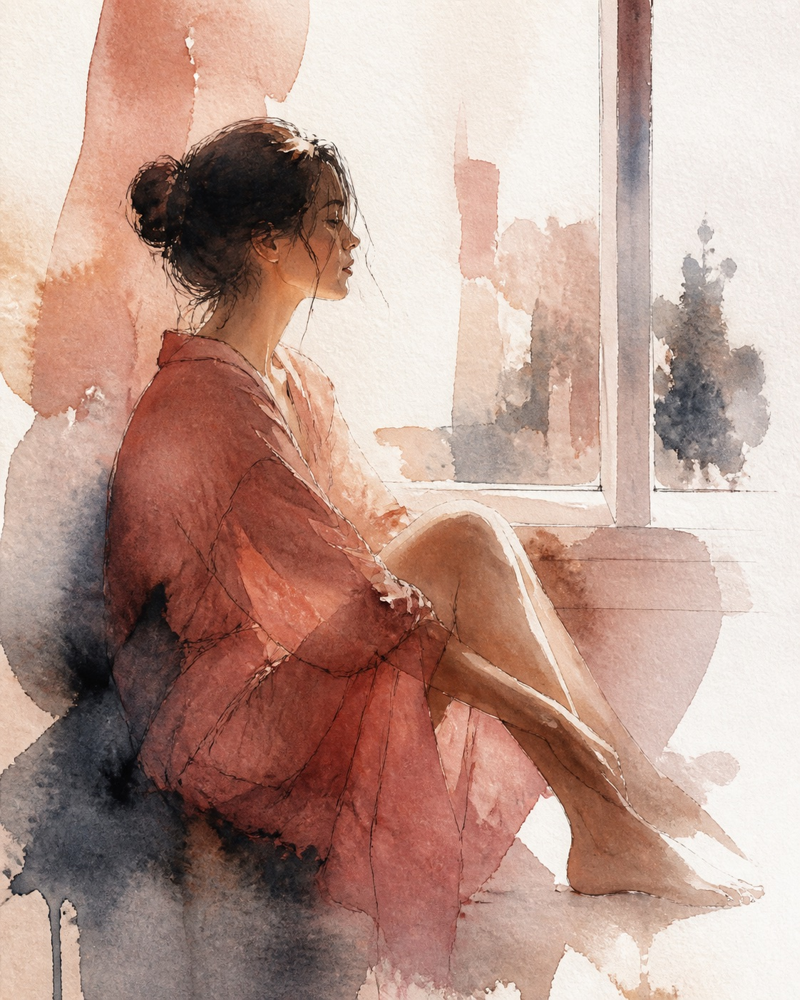
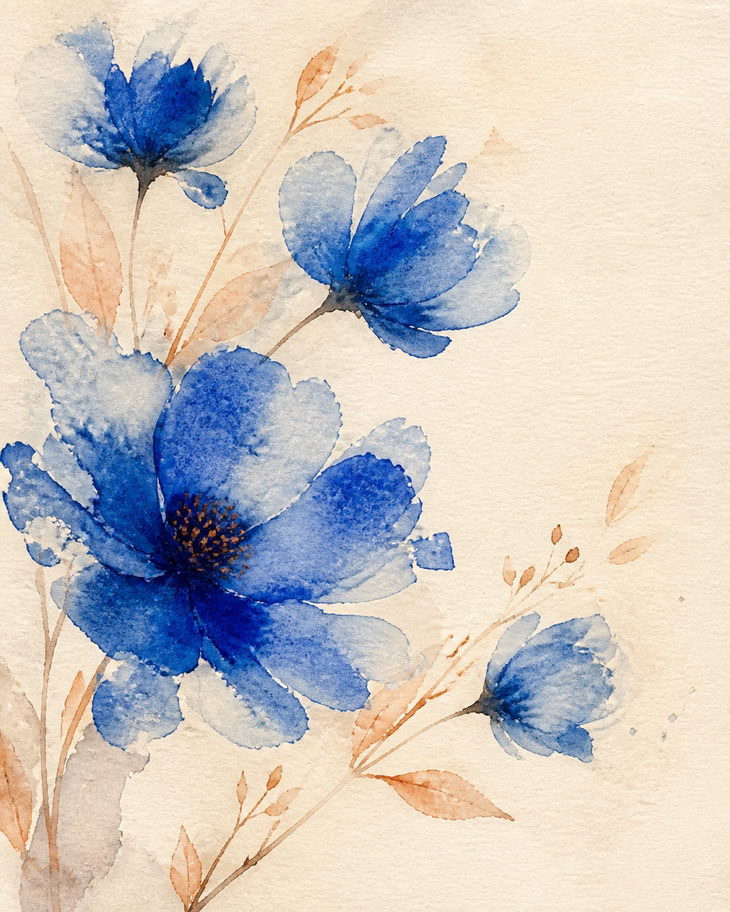
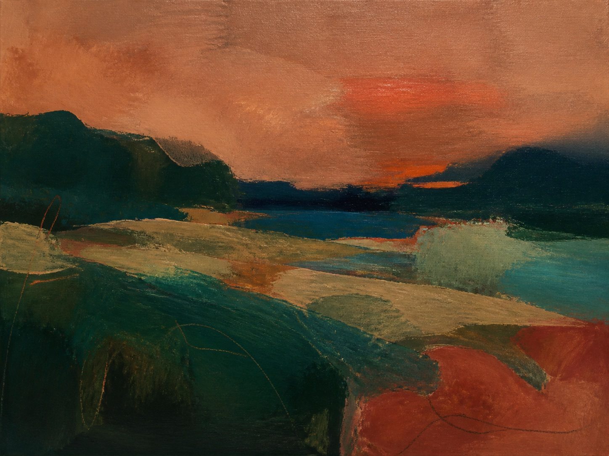
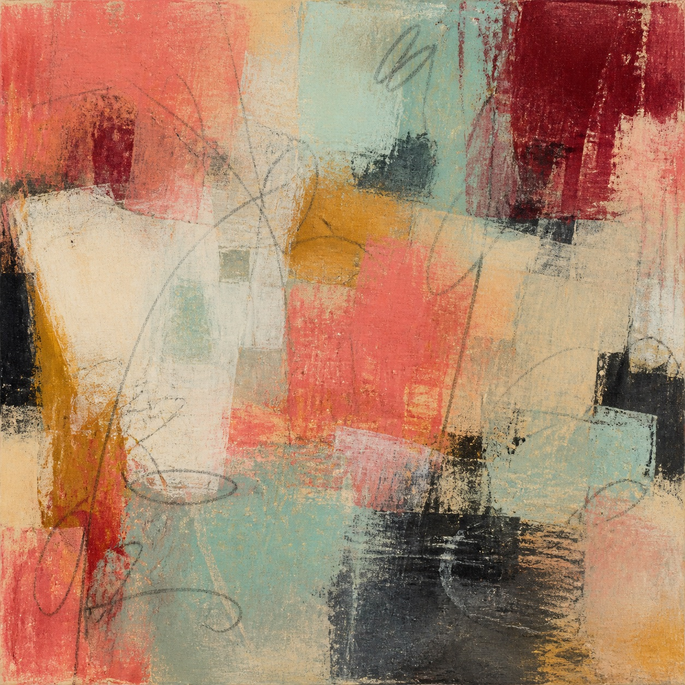

Pintura em tela · Aquarela
Cor que
guarda
histórias.
Entre camadas, água e gesto, Bianca Felga transforma memórias em matéria sensível.

obra 01 / 04“Pintar é escutar o que ainda não encontrou palavra.”
Galeria aberta
Obras para ver
com tempo.
Uma seleção entre transparências de aquarela e a presença tátil da tinta sobre a tela.




Sobre a artista
A pintura começa no encontro.
Bianca investiga o que existe entre a lembrança e a cor. Seu trabalho percorre a aquarela, a pintura em tela e a palavra.
O ateliê é um lugar de curiosidade: cada mancha pode abrir um caminho.Conheça a trajetória
Pintura com palavras
Textos que também
deixam marcas.
Notas de ateliê, processos e pequenos ensaios sobre arte, cotidiano e presença.
O tempo de olhar antes de acrescentar outra camada.
Continuar lendoCursos Hotmart
Leve a pintura
para perto.
Percursos online para quem quer começar, retomar ou aprofundar a prática artística no próprio ritmo.
Conta-me
Uma obra pode começar com a sua história.
Quer conversar sobre uma encomenda, uma obra disponível ou uma parceria?